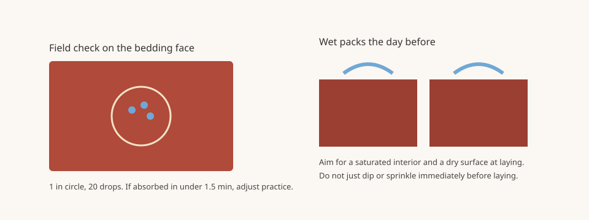

Mortar Smash › Trade guides › Wetting bricks before laying
Not every brick needs to be wetted, and wetting the wrong way can make units slide on the bed. The question is how fast the brick will draw water from the mortar at the time of laying. The Brick Industry Association's Technical Note 7B (November 2017) is the source for the practices on this page. It is a workmanship note. The code edition and project specification that govern the job come first.
Why high absorption matters
BIA 7B says brick with an initial rate of absorption (IRA) greater than 30 g/min per 30 sq in. (30 g/min per 194 cm²) at the time of laying tend to draw too much moisture from the mortar before initial set, which can result in cracking and poor bond. Construction practice may need to change to improve bond and water penetration resistance. ASTM C67 includes a laboratory method for measuring IRA. The note also warns that some coatings, surface treatments and textures can return an elevated laboratory IRA without affecting the mortar the same way in the field, and that IRA can vary by production run and by how the brick has been stored on site.
A field check you can do on the bedding face
BIA 7B describes a crude field method. Draw a 1 in. (25.4 mm) circle with a wax pencil on the brick surface that will be in contact with the mortar (a quarter can be used as a guide). Place 20 drops of water inside the circle with a medicine dropper and time how long the water takes to be absorbed. If that time exceeds 1½ minutes, typical setting methods should suffice. If it is less than 1½ minutes, adjustments to typical construction practice are recommended.
How to wet the packs, if you wet them
BIA's 2017 note says the International Building Code references the Specification for Masonry Structures (TMS 602), which requires brick with an IRA exceeding 30 g/min per 30 sq in. to be wetted before laying so the IRA is less than that limit when the units are placed. That is what the 2017 note reports. Confirm the code edition and specification that apply to the job; do not treat the 2017 summary as a substitute for them. BIA also notes that wetting every unit this way may be impractical on large projects, and the contractor may instead modify the mortar to improve water retention.
If brick are to be wetted, the method matters. Sprinkling or dipping units in a bucket just before laying can leave a surface-wet face, which BIA says may not be sufficient. The units should have a saturated interior but be surface dry (saturated surface dry) when they are laid. Satisfactory methods, the note says, are letting water run on the packs or cubes, or placing them in a large tank of water, done the day before they are laid, or not later than several hours before use, so the surfaces can dry. Wetting low-absorption brick, or wetting excessively, can leave the units saturated so they cannot take water from the mortar. The joints then bleed and the brick slide, a condition masons call floating.
When wetting is impractical, adjust the mortar
For brick with an IRA greater than 30 g/min per 30 sq in., BIA 7B says mortar should be mixed to maximize water retention by increasing mixing water or lime content within the limits of ASTM C270, especially when pre-wetting is impossible or impractical. Admixtures intended to increase water retention may be used only when test data show no harmful effects. For brick with an IRA less than 5 g/min per 30 sq in., the note says to mix with reduced amounts of water or lime to minimize water retention, still within ASTM C270 lime limits. See also how to mix mortar and mortar types N, S, M and O. Site storage also changes IRA; keep packs dry until you decide to wet them, as in how to store bricks on site.

Wetting bricks before laying FAQ
Do all bricks need to be wetted before laying?
No. BIA Technical Note 7B (November 2017) is concerned with high-absorption units. If a field check shows 20 drops in a 1 in. circle taking more than 1½ minutes to absorb, typical setting methods should suffice. Wetting low-absorption brick can cause floating.
How do I check absorption on site?
BIA 7B describes a crude field method: draw a 1 in. (25.4 mm) circle on the bedding face, place 20 drops of water in it, and time the absorption. Less than 1½ minutes means typical practice should be adjusted. Laboratory IRA is measured by ASTM C67 and can differ from field behavior.
If I wet the brick, when should I do it?
BIA 7B says not to rely on sprinkling or dipping just before laying. Let water run on the packs or place them in a tank the day before, or at least several hours before use, so the units are saturated inside but surface dry when laid.
Sources
Figures and uses are quoted or condensed from the sources above, which were read on 11 November 2026. Codes and project specifications differ by country and job; where they conflict with this page, follow them.
Published 11 November 2026 by Mortar Smash. General information only, not engineering or code advice.